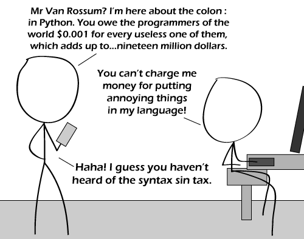

Comic JK 620
When I Feel Like It
⇤
<
?
>
⇥

⇤
<
?
>
⇥
Forum
.
RSS
.
Digg
.
Facebook
.
Reddit
.
Twitter
.
Stumbleupon
Enter your thoughts on number 620 here. Please, no spamming, trolling, or tax fraud. :::::::::::::::::::::::::::::::::::::::::::::::::::::::::::::::::::::::::::::::::::: Bad for Mr. Rossum, but I wouldn't want to be the guy who invented lisp. All the parens... >All of them completely useful. >> Often, people also encode the nesting in indentation. >>> The parens are not redundant though; not all information is preserved if you use indentation rather than parens and it would be too much of a hassle to use only indents and no parens. There is nothing wrong with colons in Python. That's like debating whether if-blocks with one line should have {} or not around the one statement in c. There are stylistic advantages and disadvantages to both. I'm sick of computer religious war bullshit - there are no black-and-white answers. >Unless they're in text areas like this. >Yeah but python is whitespace sensitive, in theory that should eliminate the need for needless punctuation >>Could always revert back to old black-and-green >> The colon removes any ambiguity that would result from not having it (which I'm having a hard time thinking of). Also, it looks better with it than without. Python is made with aesthetics in mind, you know :P >>>I always thought the colon was the thing that got the shit out of you... >>> I personally think it looks better without the colon. Anyway, I think the colon should be automatically displayed in the text editor, but not saved to the text file – that way everyone can choose their preference, and people who don’t like the colon don’t have to look at it. --terrible idea! then you would have to use a special text editor! i like notepad++ for everything... And don’t forget the extra self parameter as the first function argument of every method of an object. It should be a keyword instead. I read a defense of self as the first argument once, but I didn’t really understand it, and it wasn’t very convincing. (If anyone understood it and thinks it’s justified, by all means explain.) > The main times I make use of self being a parameter is when I need to pass a function as an argument to another function like reduce. Instead of creating an unnecessary lambda and doing "reduce(lambda a, b: a.func(b), sequence)", I do "reduce(A.func, sequence)" (where A is a's class). And it removes a hell of a lot of ambiguity when nesting classes and functions (eg): class A(object): def function1(aSelf): class B(object): def function2(bSelf): Yeah, these are corner cases, but the way Python handles these corner cases is what makes it such an awesome language. >>>>In Python, the colon should be optional. Because it is essentially useless. But what about single line ifs? >>>>>>A conditional expression has an unambiguous ending, always. So you can always tell when the condition ends and the block begins, even on one line. Did anyone else initially think the character on the right was sitting at a piano…? > I did. I also corrected your spelling. > Ohhhhh... That's supposed to be a keyboard and monitor! Where's the computer? Maybe one of those fancy all-in-one-box macs? I actually at first missed the name, and thought this was a proctologist joke… A syntax sin tax would mean instant bankruptcy for Larry Wall… >Seriously. Ew. >>Yeah yeah, these are unnecessary, but whatever > That's what she said! >> I wish she'd said it earlier >>>Haha! They really are unnecessary. At least that's what I thought when I was first learning the language. I don't really notice/care about them anymore. WOOOOOOOOOOOOOO!